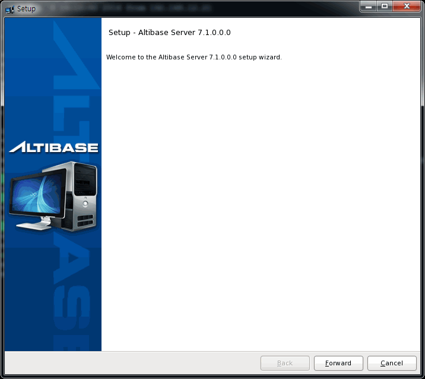
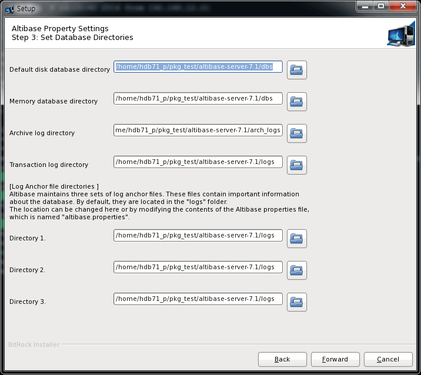

시스템 요구사항
여기서 언급되는 요구사항과 권장사항은 일반적인 용도의 데이터베이스를 가정한 것이다. 따라서 사용자의 데이터베이스 시스템이나 용도에 따라서 달라질 수 있으므로, 시스템 요구사항에 대한 자세한 사항은 Altibase 고객서비스포털(http://support.altibase.com)로 문의한다.
아래 내용은 유닉스/리눅스에서 Altibase 제품을 설치하는 방법을 기준으로 설명한다.
메모리
64-bit OS: 최소 1GB 이상 (권장: 2GB 이상, 최대 제한 없음)
CPU
1 CPU 이상 (권장: 2 CPU 이상)
하드 디스크
패치 설치 시 Altibase 패키지 인스톨러는 패치가 적용되는 파일에 대해서 백업을 생성하고 이를 $ALTIBASE_HOME/APatch 디렉터리에 저장한다. 이 디렉터리 내에는 각 패치 시마다 생성되는 별도의 백업 디렉터리들이 위치한다. 이 백업 파일들은 후에 패치를 롤백할 때 사용된다.
또한, 언인스톨 또는 패치를 롤백할 때 사용되는 실행 파일들은 제품 설치 또는 패치 적용 시에 $ALTIBASE_HOME/APatch 디렉터리에 설치된다.
* 주의 1 : HP 플래폼에서는 인스톨러 패치시 자동 백업과 롤백이 지원되지 않는다. 사용자가 수작업으로 데이터 및 로그 파일들을 백업해야 한다.
* 주의 2: 패키지 인스톨러를 통해 설치된 파일에 한해서만 이 백업 디렉터리에 백업되며, 데이터 파일 및 로그 파일과 같이 제품 설치 후에 생성되는 파일은 백업되지 않는다.
네트워크
이중화 기능 사용 시 전용선 사용을 권장한다.
Altibase 패키지 인스톨러
Altibase설치 기본 순서
Altibase 제품 설치하려면, 다음 단계대로 수행한다. 각 과정에 대한 상세한 설명은 운영 체제에 따른 제품 설치에서 자세히 설명한다.
- 설치 환경 사전 확인
- Altibase 패키지 인스톨러 다운로드
- Altibase 패키지 인스톨러 실행
- 설치 디렉터리 입력 및 설치 타입 선택
- Altibase 프로퍼티 설정
- Altibase 프로퍼티 확인
- Altibase 제품 설치
- Altibase 라이선스 입력
- Altibase 빠른 설정 가이드 미리 보기
- 설치 완료
- 설치 후 작업
1. 설치 환경 사전 확인
Altibase 패키지 인스톨러는 제품을 설치하기 전에 설치할 장비의 환경이 성공적인 설치를 위한 요구사항을 만족하는지를 알기 위해서 먼저 환경을 검사한다.
이 과정은 그래픽 유저 인터페이스로 보여 주지 않고 수행된다. 이 과정 중에 Altibase 패키지 인스톨러는 설치할 서버 장비에 대해서 다음의 정보를 확인한다.
- 운영 체제 이름과 버전
- 운영 체제의 모드 (64-bit 또는 32-bit)
Altibase 패키지 인스톨러가 확인한 정보와 일치하지 않으면, 에러 메시지를 반환하고 설치는 중단된다. 앞선 단계에서의 시스템 구성의 문제를 발견하는 것이 설치 중에 문제에 부딪힐 가능성을 줄여주기 때문이다.
2. 패키지 인스톨러 다운로드
Altibase 고객지원서비스 포털 (http://support.altibase.com/)을 방문하여 본인의 운영 체제에 적합한 인스톨러를 다운로드 받는다.
Altibase 패키지 인스톨러의 이름은 아래 예에서 보여주는 규칙을 따른다.
예) Altibase 서버 패키지 인스톨러
예) Altibase 클라이언트 패키지 인스톨러
Altibase 서버 패키지와 클라이언트 패키지는 다른 패키지로 분리되어 있다. 그러나 Altibase 서버 패키지는 클라이언트 패키지를 포함한다.
Altibase 패키지 인스톨러는 아래의 OS 별로 제공된다. 설치 전 아래의 명령어로 OS 관련 정보를 확인한 후 적절한 패키지 인스톨러를 선택한다.
$ uname -a Linux rhel6-x64 2.6.32-71.el6.x86_64 #1 SMP Wed Sep 1 01:33:01 EDT 2010 x86_64 x86_64 x86_64 GNU/Linux
3. Altibase 패키지 인스톨러 실행
제품을 설치하기 위해 Altibase 패키지 인스톨러는 다음 두 가지 모드로 시작할 수 있다.
- 대화형 커맨드 라인 모드: DISPLAY 환경변수를 설정하지 않았을 때 이 모드로 실행된다.
- GUI (Graphical User Interface): DISPLAY 환경변수를 설정했을 때 이 모드로 실행된다.
유닉스 사용자는 Altibase 패키지 인스톨러를 다운로드 한 후 chmod로 파일의 권한을 변경해야 실행할 수 있다.
$ chmod +x altibase-server-7.1.0.0.0-LINUX-X86-64bit-release.run
Altibase 패키지 인스톨러를 실행한다.
$./altibase-server-7.1.0.0.0-LINUX-X86-64bit-release.run
설치 모드를 GUI 모드로 설정하였다면, 아래와 같은 시작 패널이 보여진다.

4. 설치 디렉터리 입력 및 설치 타입 선택
아래 설치 디렉터리 패널에서는 Altibase 홈 디렉터리, 즉 Altibase가 설치될 디렉터리와 패키지 설치 타입을 선택한다.

Altibase 제품 설치를 원하는 경우 "Full Installation"을, 기존에 설치된 버전에 대한 패치를 원하는 경우 "Patch Installation"을 선택한다.
사용자가 입력한 디렉터리에 Altibase 제품이 이미 설치되어 있다면, 경고 메지지가 다이얼로그 박스에 보여진다.
이 경우 다른 디렉터리를 선택하든지, 그 디렉터리에 설치된 제품을 먼저 언인스톨 하든지 해야한다.
5. Altibase 프로퍼티 설정
Altibase 프로퍼티를 설정하는 단계는 다음의 세 단계로 구분된다.
Step 1: Basic Database Operation Properties
Step 2: Database Creation Properties
Step 3: Set Database Directories
Step 1: Basic Database Operation Properties
- 데이터베이스 이름
- 연결 포트 번호
- 메모리 데이터베이스의 최대 크기
- 버퍼 크기
- 새로운 데이터베이스를 생성하기 위한 SQL 스크립트를 생성할 것인지를 지정 (즉 2단계를 수행할 지 말지) YES를 선택하면 2단계를 수행하고, 그렇지 않으면 2단계를 건너뛴다. 이 과정을 이용해서 SQL 스크립트가 생성되는지에 상관없이, 새로운 데이터베이스는 다음 구문을 사용해서 생성할 수 있다: server create [DB Character-set] [National Character-set]

Step 2: Database Creation Properties
2단계에서 생성된 SQL 스크립트는 $ALTIBASE_HOME/install/post_install.sh 파일에 저장된다.
- 초기 데이터베이스 크기
- 데이터베이스 아카이브 로깅 모드
- Noarchivelog
- Archivelog
- 데이터베이스 문자 셋
- MS949
- US7ASCII
- KO16KSC5601
- BIG5
- GB231280
- MS936
- UTF-8
- SHIFT-JIS
- MS932
- EUC-JP
- 국가 문자 셋
- UTF-16
- UTF-8

Step 3: Set Database Directories
- 기본 디스크 데이터베이스 디렉터리
- 메모리 데이터베이스 디렉터리
- 아카이브 로그 디렉터리
- 트랜잭션 로그 디렉터리
- 로그 앵커 파일 디렉터리

이 단계에 포함되지 않은 프로퍼티의 값을 설정하거나 단계1 또는 단계3에서 설정한 프로퍼티 값을 나중에 변경하려면, $ALTIBASE_HOME/conf/altibase.propertites 파일을 수동으로 편집하면 된다.
6. Altibase 프로퍼티 확인
다음 패널은 전 과정에서 설정한 프로퍼티의 값을 보여준다.

To change these properties after installation is complete, please modify the following file: /home/hdb71_p/pkg_test/altibase-server-7.1/conf/altibase.properties. 1. Altibase Property Settings: Step 1: Basic Database Operation Properties 1) Database name: [mydb] 2) Altibase connection port number (1024-65535): [20300] 3) Maximum size of memory database: [2G] 4) Buffer area size for caching disk-based database pages: [128M] 2. Altibase Property Settings: Step 2: Database Creation Properties 1) Initial database size [10M] 2) Database archive logging mode [noarchivelog] 3) Database character set [UTF8] 4) National character set [UTF8] 3. Altibase Property Settings: Step 3: Set Database Directories The database will not operate properly if any of these directories are removed. 1) Disk database directory: [/home/hdb71_p/pkg_test/altibase-server-7.1/dbs] 2) Memory database directory: [/home/hdb71_p/pkg_test/altibase-server-7.1/dbs] 3) Archive log directory: [/home/hdb71_p/pkg_test/altibase-server-7.1/arch_logs] 4) Transaction log directory: [/home/hdb71_p/pkg_test/altibase-server-7.1/logs] 5) Log Anchor file directories: Directory 1: [/home/hdb71_p/pkg_test/altibase-server-7.1/logs] Directory 2: [/home/hdb71_p/pkg_test/altibase-server-7.1/logs] Directory 3: [/home/hdb71_p/pkg_test/altibase-server-7.1/logs]
이 값들을 확인 후에, “Forward” 를 클릭하면 “Ready to Install” 패널이 아래처럼 보여질 것이다.
설치를 계속하려면 “Forward”를 누른다.
7. Altibase 제품 설치

설치가 완료되면, 인스톨러는 아래의 작업들을 GUI 화면 없이 수행한다.
설정한 프로퍼티가 altibase.properties파일에 업데이트 된다.
- Altibase 서버 구동을 위한 기본 환경이 수록되어 있는 altibase_user.env 파일이 $ALTIBASE_HOME/conf 디렉터리에 생성된다. 그리고 이 파일을 실행하는 명령어가 사용자 계정의 환경 설정 파일(.bashrc 또는 .bash_profile 또는 .profile 등)에 추가된다.
7. Altibase 라이선스 입력
아래는 Altibase의 라이선스 키를 입력하는 화면이다. Altibase 패키지 인스톨러는 라이선스 키를 입력하는 다음 세 가지 방법을 제공한다.
- 라이선스 키를 직접 입력
- 라이선스 키가 저장된 파일 선택
- 라이선스 추후 등록: 라이선스 키를 아직까지 얻지 못했다면, 나중에 라이선스 키를 획득한 후, $ALTIBASE_HOME/conf 디렉터리에 새 라이선스 파일을 복사하면 된다. 단, 이 과정에서 라이선스 키를 등록하지 않으면 다음 단계에서 데이터베이스를 생성할지 여부를 묻지 않는다.
$ cp license $ALTIBASE_HOME/conf/
8. Altibase 빠른 설정 가이드 미리 보기
Altibase 빠른 설정 가이드 패널은 설치 성공 후에 Altibase를 어떻게 구동할 것인지를 안내한다.
Altibase 패키지 인스톨러는 사용자들이 좀 더 쉽게 시스템 커널 파라미터와 환경변수를 설정하도록 다음의 두 쉘 스크립트를 제공한다.
- $ALTIBASE_HOME/install/pre_install.sh 이 스크립트는 필수 시스템 커널 파라미터의 최소 집합을 포함하며, 그들의 권장 값과 어떻게 설정하는지에 대해서 설명한다.
- $ALTIBASE_HOME/install/post_install.sh 이 스크립트는 Altibase 프로퍼티 설정 과정에서 단계2를 수행했다면 새로운 데이터베이스를 생성하기 위한 SQL 스크립트를 포함한다.
- $ALTIBASE_HOME/packages/catproc.sql 이 스크립트는 PSM을 사용하기 위한 SQL 스크립트를 포함한다.
다음 패널에서 체크 박스를 선택하면, Altibase 패키지 인스톨러는 새로운 데이터베이스를 생성하고 PSM을 사용하기 위한 스크립트를 실행할 것이며, 이로 인해 설치 시간이 조금 더 소요될 것이다. 체크 박스를 선택하지 않을 경우, 제품 설치 후에 수동으로 데이터베이스 생성 및 PSM 스크립트를 실행해야 한다.

아래의 창은 데이터베이스 생성 중에 나타나는 화면이다.


10. 설치 종료
성공적인 설치 후 다음 패널이 나타난다.
Finish 버튼을 누르면 아래와 같이 환경 설정 가이드 화면이 나타난다.
11. 설치 후 작업
성공적인 설치 후, 아래의 작업을 해야 한다.
1. 시스템 커널 파라미터를 설치 과정 중에 설정하지 않았다면, 수동으로 이를 설정한다. $ALTIBASE_HOME/install/pre_install.sh 파일을 참고한다.
2. 로그인 쉘 스크립트를 실행시키기 위해서, 다음 중 하나를 수행한다.
- 로그아웃 후 다시 로그인
- . ~/.bash_profile 실행
- source ~/.bash_profile 실행
3. 인스톨러 설치 단계에서 데이터베이스 생성을 하지 않은 경우, 아래와 같이 생성한다.
- 설치 단계에서 데이터베이스 생성을 위한 프로퍼티를 입력한 경우, $ALTIBASE_HOME/install/post_install.sh 스크립트를 실행하라.
$ sh post_install.sh dbcreate - 설치 단계에서 데이터베이스 생성을 위한 프로퍼티를 입력하지 않은 경우, server 스크립트를 실행하라.
$ server create utf8 utf8 - 설치단계에서 PSM 사용을 위한 프로퍼티를 입력하지 않은 경우, catproc.sql 을 실행하라.
$ isql -s 127.0.0.1 -u sys -p manager -silent -f ${ALTIBASE_HOME}/packages/catproc.sql
{kind=link}
{kind=link}
{kind=link}
{kind=link}
{kind=link}
{kind=link}
{kind=link}
{kind=link}
{kind=link}
{kind=link}